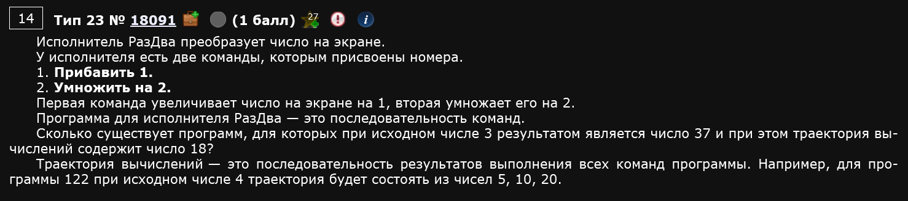
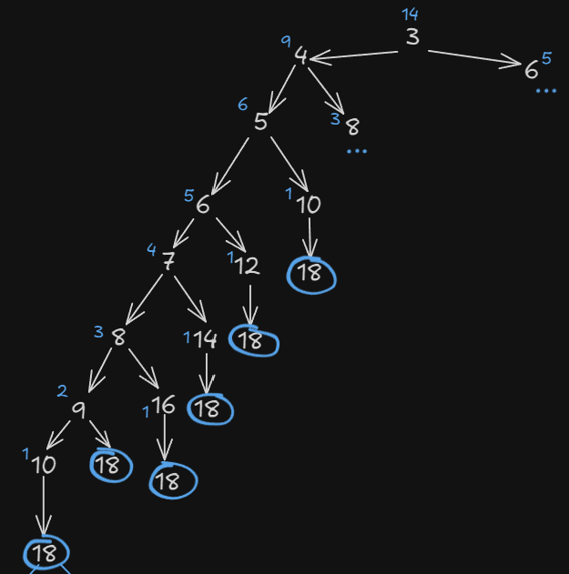
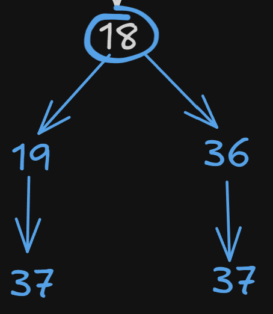
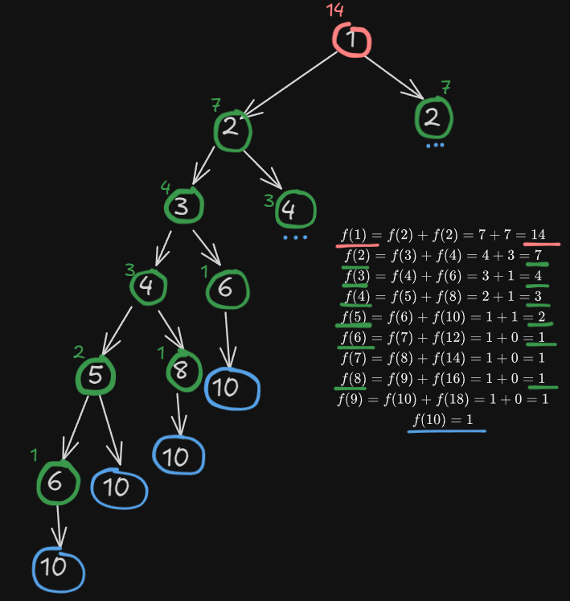
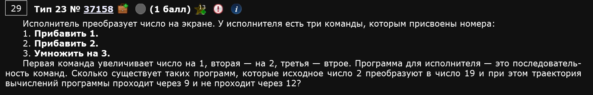
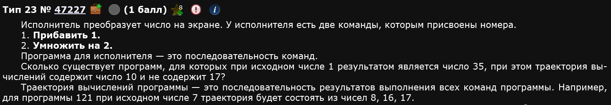
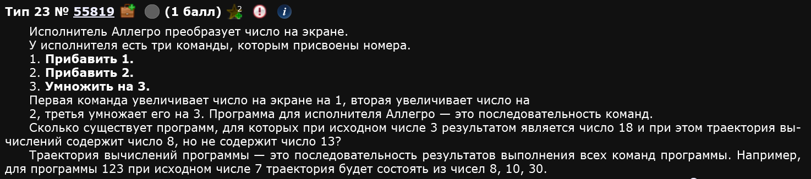
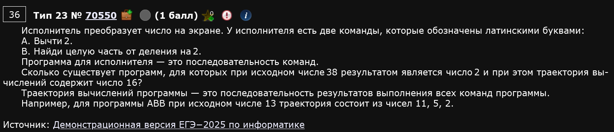
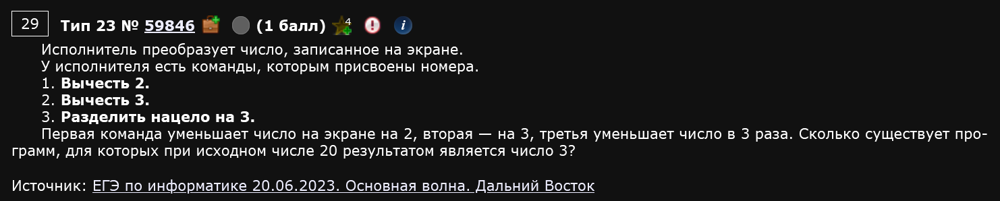
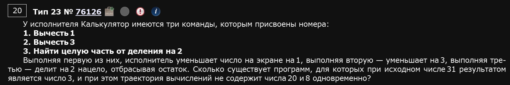

Сахар, халява, шелк - все это про задание 23. Это задание ОГЭ, но посложнее (шушуть). Мы будем решать кодом, решение руками мы разберем только в качестве примера для осознания как писать код.
Пример 1)

Сначала попробуем решить задание руками. Для начала, нам нужно рассмотреть все возможные варианты получения из числа 3 числа 18. Давайте порисуем:

Здесь показана одна из веток (полностью) и то как можно посчитать все способы получить 3 из 18. Работает это также, как и в задании ОГЭ с графиками и путями из городов.
Сколько способов получить из числа 9 число 18 нашими командами? Ответ: 2. Либо умножить на 2 и сразу получить 18, либо получить из числа 9 число 10 и докрутить до 18 прибавлением единицы. Окей, а сколько способов получить из числа 8 число 18? Ответ: 3. Либо получить 16 умножением на 2, а потом докрутить до 18 прибавлением единиц - это первый, и еще два берутся из девятки. И так далее.
Т.е. мы строим такое дерево и идем по нему в обратном направлении, чтобы получить число способов, которыми можно получить число Y из числа X. Повторяющиеся этапы, как видно из рисунка, можно не рассматривать, они нам известны по ходу обратного движения.
Окей, но почему мы взяли именно из 3 в 18? Нам же надо из 3 в 37, включая 18,,, Вот тут подробнее.
Что значит “число 18 содержится в траектории”? Это значит, что любая интересующая нас последовательность команд должна быть такой, чтобы по пути к числу 37, в ходе преобразований, получалось число 18. Т.е. например, вот такая последовательность:
Нам не подходит.
А вот такая последовательность:
Нам подходит.
Число, которое обязательно должно быть включено в нашу последовательность команд называется обязательным этапом, а число, которое обязательно не включается в нашу последовательность команд называется избегаемым этапом.
Так вот, 18 - это обязательный этап. И он “сужает” наше дерево подходящих алгоритмов. В буквальном смысле:

Таким образом, из каждого 18 можно получить 37 двумя способами: либо умножить на 2, получить 36 и прибавить 1, либо прибавлять 1 до 37.
Вспоминаем, что из числа 3 получить число 18 можно 14ю способами, а из каждой 18 можно получить 37 двумя способами, значит .
Ответ: 28.
Казалось бы, в чем проблема способа решения руками? Такая же, как и для всех остальных заданий, которые решаются руками - шаг влево, шаг вправо и все, у вас ошибка. Чуть больше условий - вы не знайте что делать. Поэтому существует способ решить это задание кодом. Это приоритетный способ, поскольку оч легкий и шаблонный.
def f(x,end):
if x > end:
return 0
if x == end:
return 1
else:
return f(x + 1, end) + f(x * 2, end)
print(f(3,18) * f(18,37))В с о .
Код полностью повторяет мысли выше. Давайте разберемся как именно.
Создаем функцию, которая принимает на вход два числа - число x - это наше “текущее” положение на ветках, число end - это конечная точка, куда нам надо прийти.
Далее, если x > end, тогда продолжать смысла нет, ведь мы перепрыгнули наше число. Пример: если мы 10 умножим на 2, то получим 20, что больше, чем 18, того числа, которое нам нужно. Кол-во способов как получить из числа 20 число 18 командами и равно нулю. Поэтому return 0
Если x == end тогда так: сколькими способами можно получить число 18 из 18? Правильно, одним. Поэтому return 1
Иначе, если оба условия ложны, тогда мы заходим в последнюю ветку функции. И вот тут интересно: мы возвращаем значение функции от других таких же функций, но с x+1 и x*2. Почему так? Потому, что это буквально то, что мы делаем руками, только реализованное через код.
Давайте еще подробнее. Предположим, у нас задача попроще: получить число 10 из числа 1 теми же командами и . Тогда:
На рисунке:

Т.е. код и наши руки делают буквально одно и то же.
Окей, думаю, тут понятно. А зачем мы в конце кода умножаем на f(18,37)? Это как раз те пути, которые получаются из 18 в 37. Т.е. умножая f(3,18) * f(18,37) мы буквально умножаем 14 на 2 в нашем способе руками.
Как изменить этот код, исходя из других задач? Сейчас узнаем.
Пример 2)

Все, что изменится в коде - это условие про “не проходит через 12” и добавится еще 1 возможное действие.
Что значит, что “траектория не содержит 12”? Это значит, что любая последовательность команд по пути преобразования не должна в качестве результата промежуточных преобразований выдавать 12. Т.е. когда такое получается - этот путь мы не считаем, делаем return 0.
Также, добавилось еще одно возможное действие. Всего действий 3 - прибавить 1, прибавить 2 и умножить на 3. Меняется только последняя строчка нашей функции.
В остальном все то же самое.
def f(x, end):
if x == end:
return 1
if x > end or x == 12:
return 0
return f(x + 1, end) + f(x + 2, end) + f(x * 3, end)
print(f(2, 9) * f(9, 19))Пример 3)

def F(x,y):
if x>y or x==17:
return 0
if x==y:
return 1
else:
return F(x+1,y)+F(x*2,y)
print (F(1,10)*F(10,35))Пример 4)

def f(x, y):
if x > y or x == 13:
return 0
if x == y:
return 1
else:
return f(x + 1, y) + f(x + 2, y)+ f(x * 3, y)
print(f(3, 8) * f(8, 18))Пример 5)

В случаях, когда происходит вычитание, а не прибавление в командах некоторые вещи меняются.
- Меняются местами числа, которые мы даем функции (сначала наибольшее, потом наименьшее)
- Меняется знак у одного из условий в функции
- Меняются действия при рекурсии
В остальном все то же самое.
def f(x, y):
if x < y:
return 0
if x == y:
return 1
else:
return f(x - 2, y) + f(x // 2, y)
print(f(38, 16) * f(16, 2))Пример 6)

def f(x, y):
if x < y :
return 0
if x == y:
return 1
else:
return f(x - 2, y) + f(x - 3, y) + f(x // 3, y)
print(f(20, 3))Пример 7)

def f(x,end, c=0):
if x < end:
return 0
if x == end:
return 1
s = c
if x == 20:
s += 1
if x == 8:
s += 1
if s == 2:
return 0
return f(x-1, end, s) + f(x-3, end, s) + f(x // 2, end, s)
print(f(31,3))